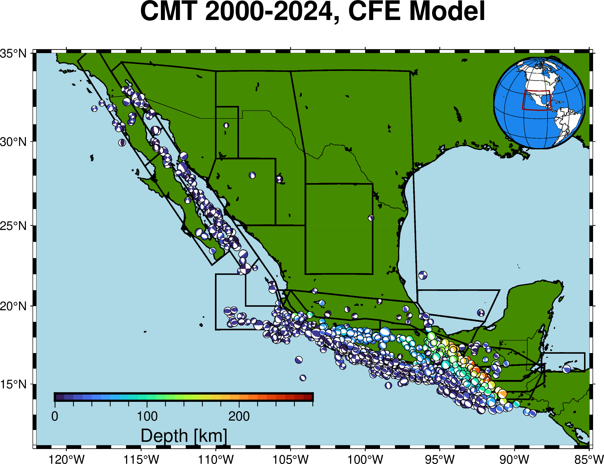

Background
Since the application of Seismic Hazard in Mexico, there were applied different parameters to define seismogenic zones that represent the country's tectonic activity. The current seismogenic zones used for PSH estimations consists of 47 seismic zones classified mainly by magnitude and depth. However, there are other proposals that use similar input parameters to establish their zones, none of the consulted works mentioned a specific procedure for defining their seismic source models, bringing concern and the idea to define a method for obtaining reproducible and representative models.
Machine Learning
The approach involved analyzing different clustering algorithms and data scaling strategies to find the optimal fit for the employed dataset. Among the tested algorithms were: K-means, DBSCAN, HDBSCAN and BIRCH. The best configuration was achieved using HDBSCAN, allowing less user intervention and better classification. The clustering methodology was also tested using Cesca's (2013) moment tensor metric, giving results consistent with those obtained from standard scaling and euclidean metrics.
HDBSCAN algorithm
This is a simplified version of the application of HDBSCAN...
Application
This section shows the procedure of application of the algorithm ...
Results
This section shows the results and seismogenic zones obtained ...
PSHA CDMX
As part of the results analysis of the seismogenic zones, it was applied a PSH for the site CU located in Mexico City for this, it was obtained the distance and magnitude distributions for each zone regarding the site.
Seismic hazard results
This section shows the annual rate of excedence for the CU site, considering all zones, and Gracía's GMPE (2020).
UHS
This section presents the Uniform hazard spectrum for the site compared with the reported by SASID.